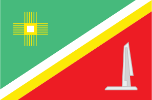
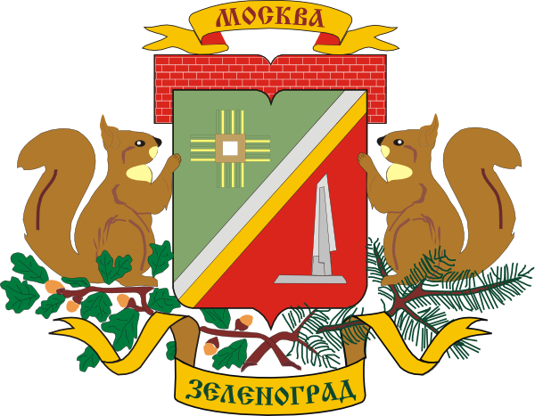

| Зеленоград Зеленоградский административный округ (ЗелАО) |
|
|  |  |
| Флаг | Герб | Статус | административный округ |
| Входит в состав | города Москвы |
| Включает | 5 районов |
| Дата образования | 10 июля 1991 года |
| Префект | Анатолий Николаевич Смирнов |
| Площадь | 37,1999 км² (3,4%, 12-е место) |
| Население (2021) | ↘250 173 чел. (1.98%, 11-е место) |
| Плотность | 6725.1 чел./км² (10-е место) |
| Почтовые индексы | 124xxx |
| Код ОКАТО | 45272 |
Зеленогра́д (букв. зелёный город; офиц. Зеленогра́дский администрати́вный о́круг) — один из 12 административных округов Москвы. Расположен в 37 км к северо-западу от центра Москвы. Первый из трёх округов, которые были образованы на территориях, полностью находящихся за пределами Московской кольцевой автомобильной дороги. Один из основных научно-производственных центров советской и российской электроники и микроэлектроники.
По состоянию на 2021 год самый маленький по территории и предпоследний по населению округ Москвы. Вместе с тем Зеленоград как обособленный населённый пункт мог бы войти в пятёрку крупнейших городов Подмосковья (уступая Балашихе, Подольску, Химкам и опережая Мытищи) и в первую сотню городов России.
Со всех сторон окружён территорией Московской области и является самым крупным эксклавом Москвы: практически со всех сторон окружён территорией городского округа Солнечногорск, за исключением небольшого участка на юго-востоке, где Зеленоград граничит с городским округом Химки. В состав Зеленограда входят также посёлок Малино, часть посёлка Алабушево, деревни: Кутузово, Новомалино и Рожки. На западной границе находится в непосредственном соприкосновении с поселением Андреевкой городского округа Солнечногорск, образуя с ним агломерацию.
До расширения территории Москвы в 2012 году Зеленоград по доле зелёных насаждений в общей площади (~30%) занимал второе место среди административных округов Москвы, уступая только Восточному административному округу.
Известен под прозвищем советская/русская/российская Силиконовая (Кремниевая) долина.
Названия жителей: зеленогра́дец, зеленогра́дка, зеленогра́дцы.
В своей основе современный Зеленоград построен на территориях деревень Матушкино и Савёлки, посёлка Крюково, а также ряда других более мелких населённых пунктов и нескольких дачных участков.
В 1941 году во время Битвы за Москву в районе Зеленограда от станции Крюково вдоль Крюковского шоссе (ныне Панфиловский проспект) проходила линия обороны советских войск. В городе и окрестностях находится большое количество памятников Великой Отечественной войны: наибольшую известность из них получил мемориальный комплекс «Штыки», из братской могилы которого 3 декабря 1966 года в ознаменование 25-летней годовщины разгрома гитлеровских войск под Москвой был взят прах Неизвестного солдата и перезахоронен в Александровском саду у стен Кремля. По состоянию на 2021 год на территории округа продолжают обнаруживать неразорвавшиеся боеприпасы и другие свидетельства боёв.
| Мемориальный комплекс «Штыки» |
К 1950-м годам в Москве и во многих других крупных промышленных городах СССР сложилась ситуация с острой нехваткой жилья, для разрешения которой было предложено несколько программ. Наиболее известной стала программа массового индустриального строительства — быстрого возведения дешёвого жилья с помощью технологий панельного домостроительства, так называемых «хрущёвок», а другой — программа строительства городов-спутников. В частности Институт Генерального плана Москвы предлагал создать вокруг Москвы 10 новых городов-спутников.
3 марта 1958 года (впоследствии официальная дата основания Зеленограда) Совет Министров СССР принял постановление о строительстве первого города-спутника Москвы — нового города в районе станции Крюково[12][13]. Численность населения, согласно первоначальному проекту, должна была составлять 65 тыс. человек. Под будущий город была отведена территория площадью 11,28 км² (около 30% территории современного города) между Октябрьской железной дорогой и Ленинградским шоссе в районе 37—41 км от центра Москвы.
Фактическое строительство города было начато в 1960 году (главный архитектор Игорь Евгеньевич Рожин). В градостроительном решении нового города исследователи отмечают элементы концепции «города-сада», влияние застройки финского района Тапиола и английских новых городов (в частности Харлоу). Предусматривалось применение свободной планировки микрорайонов и застройка преимущественно четырёхэтажными жилыми зданиями. Планировалось выведение из Москвы нескольких предприятий лёгкой (текстильной) промышленности, а также шарикоподшипникового и часового заводов. Город предполагалось заселить москвичами, получавшими здесь жильё из расчёта 9 м2 на человека.
По ходу строительства города начала складываться ситуация, что промышленные предприятия переезжать в него не торопились, как результат — дальнейшая программа строительства городов-спутников вокруг Москвы была свёрнута, и город-спутник в районе станции Крюково остался единственным из запланированных десяти.
В 1962 году строящийся город по инициативе председателя Государственного комитета по электронной технике Александра Ивановича Шокина был переориентирован на развитие электроники и микроэлектроники в рамках создания комплексного центра микроэлектроники «Научный центр». Изменилась и градостроительная концепция Зеленограда: вместо сплошной четырёх-пятиэтажной застройки в городе начали возводиться также и многоэтажные здания. Впоследствии Зеленоград постоянно противопоставлялся сформировавшейся немного позднее американской Силиконовой (Кремниевой) долине, из-за чего получил одно из своих прозвищ — советская/русская Силиконовая (Кремниевая) долина. Ряд исследователей истории советской электронной промышленности обращают внимание, что заметная роль в инициативе Шокина принадлежала сбежавшим в СССР американским инженерам Джоэлю Барру и Альфреду Саранту (ставшим в СССР Иосифом Вениаминовичем Бергом и Филиппом Георгиевичем Старосом), последний из которых в 1960-х годах возглавлял КБ-2 электронной промышленности в Ленинграде. Первым директором Научного центра в 1963 году был назначен Фёдор Викторович Лукин, а Старос стал его заместителем по науке.
15 января 1963 года новый населённый пункт получил имя Зеленоград.
16—25 января 1963 года Зеленоград из населённого пункта пригородной зоны города Москвы был преобразован в город районного подчинения и передан в подчинение Ленинградскому районному Совету Москвы. Через два года, 19 февраля — 2 марта 1965 года статус Зеленограда был повышен, когда город был передан из районного подчинения в городское — непосредственно Московскому городскому Совету депутатов трудящихся. 25 ноября 1968 года в соответствии с указом Президиума Верховного Совета РСФСР, изменившим административно-территориальное деление Москвы, Зеленоград в дополнение к статусу города получил статус района Москвы.
В 1971 году был принят генеральный план застройки города (главный архитектор Игорь Покровский, архитекторы Феликс Новиков, Григорий Саевич и другие).
В 1987 году в территорию города был включён посёлок Крюково вместе с прилегающими территориями, которые должны были стать площадкой для второй очереди развития города как центра электроники, однако в связи с распадом СССР строительство новой промышленной зоны — Центра информатики и электроники (ЦИЭ) — было прекращено на нулевом цикле, при том, что строительство жилого фонда было продолжено. Расчёт количества рабочих мест в промышленных зонах так называемого Старого города никак не предполагал появление Нового города (считалось, что работой жителей Нового города обеспечит ЦИЭ[25]), и дисбаланс в отношении количества жителей и рабочих мест, усугублённый кризисом российской экономики после распада СССР, привёл к тому, что значительная часть жителей Зеленограда вынуждена ежедневно пересекать границу Старого и Нового города или выезжать за пределы округа (в первую очередь в Москву).
Вопреки нашему желанию, город перешагнул за железную дорогу. Несмотря на построенный мостопровод, связь между двумя частями города, старой и новой, слабая. Город разрублен надвое стальной магистралью...
Игорь Александрович Покровский, главный архитектор Зеленограда
| Вид на город с воздуха (2007) |
В июле 1991 года в Москве началась реформа административно-территориального деления, связанная с упразднением старых районов и созданием административных округов. В соответствии с ней город Зеленоград образовал один из десяти округов Москвы — Зеленоградский административный округ, что было закреплено постановлением президента РФ и председателя Верховного Совета РФ от 3 января 1992 года[28]. Этим же постановлением было установлено деление Зеленограда на пять муниципальных округов (№ 1, № 2, № 3, № 4 и Крюково).
Статус города Зеленограда как административного округа Москвы зафиксирован в законе города Москвы 5 июля 1995 года № 13-47 «О территориальном делении города Москвы». Этот же закон зафиксировал разделение Зеленограда на районы (муниципальные округа) № 1, № 2, № 3, № 4 и Крюково, за границами которых осталась четыре промышленные зоны Старого города (образовавшие впоследствии территориальную единицу с особым статусом Зеленоградская) и территория Зеленоградского лесопарка на территории Старого города.
4 декабря 2002 года было произведено разделение Зеленограда на три района при сохранении пяти внутригородских муниципальных образований:
Одновременно территории ТЕОС Зеленоградская и Зеленоградского лесопарка были распределены между районами Матушкино-Савёлки и Панфиловский.
С 1 января 2010 года деление на пять районов (получивших названия соответствующих пяти муниципальных образований) было восстановлено.
Зеленоград рассматривается как город в ГКГН и в законах о территориальном делении и наименованиях и границах муниципальных образований Москвы. Тем не менее в Росстате, ОКАТО и ОКТМО в качестве города не рассматривается.
| Численность населения | ||||||||
|---|---|---|---|---|---|---|---|---|
| 1970 | 1975 | 1976 | 1979 | 1982 | 1985 | 1986 | 1987 | 1989 |
| 98 000 | ↗131 000 | →131 000 | ↗141 000 | ↘137 000 | ↗152 000 | ↘151 000 | ↘148 000 | ↗159 000 |
| 1990 | 1991 | 1992 | 1993 | 1994 | 1995 | 1996 | 1997 | 1998 |
| ↗160 000 | ↗163 000 | ↗171 000 | ↗175 000 | ↗183 000 | ↗192 000 | ↗199 000 | ↗202 000 | ↗206 000 |
| 1999 | 2000 | 2001 | 2002 | 2009 | 2010 | 2012 | 2013 | 2014 |
| ↗206 800 | ↗207 100 | ↗207 800 | ↗215 727 | ↗217 560 | ↗221 712 | ↗223 584 | ↗226 477 | ↗229 926 |
| 2015 | 2016 | 2017 | 2018 | 2019 | 2020 | 2021 | ||
| ↗232 489 | ↗237 897 | ↗239 861 | ↗243 084 | ↗246 535 | ↗250 453 | ↘250 173 | ||
В 1960-х — 1980-х годах росту населения города способствовали активное жилищное строительство в целях привлечения специалистов (из всего СССР) для нужд электронных предприятий и города в целом и, как следствие, существенно меньшая, чем в среднем по Москве, длина очереди на улучшение жилищных условий.
В 1990-х — 2000-х года рост города происходил уже в основном за счёт внутримосковской миграции, когда москвичам, стоящим в очереди на улучшение жилищных условий, район Крюково предлагался как альтернатива для одновременно строившегося района Митино. В 2010-х годах из-за транспортных проблем Зеленограда московское правительство снизило темпы переезда москвичей, последний построенный микрорайон (20-й) предназначался уже в основе для завершения внутризеленоградского переселения из снесённых «хрущевок»; планы реконструкции 19-го микрорайона и строительства 17-го, 22-го и 23-го микрорайонов также исходят из внутризеленоградских задач.
| Районы Зеленограда |
По состоянию на 2017 год Зеленоград состоит из пяти районов, включающих в себя территорию двадцати двух жилых микрорайонов (из них один строится, один в проекте), пяти промышленных и двух коммунальных зон, Зеленоградского лесопарка и нескольких отдельных населённых пунктов.
Также условно город принято делить на Старый (приблизительно две трети населения и территории) и Новый город.
Старый город располагается между Октябрьской железной дорогой и Ленинградским шоссе и включает в себя четыре района — Матушкино, Савёлки, Старое Крюково и Силино. Новый город располагается западнее и южнее Октябрьской железной дороги и состоит из единственного, но самого крупного по населению и территории района Крюково. Большая часть почтовых адресов в городе (за исключением промышленно-коммунальных зон, 17-го и 19-го микрорайона, входящих в состав округа других населённых пунктов и нескольких десятков жилых домов в Старом городе) не содержит названий улиц или площадей. Нужный дом определяется по номеру корпуса, в котором первые одна-две цифры обозначают номер микрорайона[57], например корпус 1106. В нумерации микрорайонов отсутствует номер 13; нумерация корпусов обычно начинается с единицы (за исключением трёх микрорайонов, имеющих нулевые корпуса 100, 200 и 900).
По состоянию на 1 января 2020 года
| № | Район / мун.округ | Площадь, га | Население, чел. | Плотность населения чел./км² | Площадь жилых помещений, тыс. м² (по состоянию на 2017 год) | Обеспеченность жильём, м² на чел. (по состоянию на 2017 год)( |
| 1 | Матушкино | 503,1 | 40 913 | 8 089 | 924,6 | 23,1 |
| 2 | Савёлки | 812,2 | 34 726 | 4 244 | 729,9 | 21,6 |
| 3 | Старое Крюково | 380,5 | 31 427 | 8 161 | 591,5 | 19,3 |
| 4 | Силино | 1039,63 | 40 341 | 3 869 | 765,1 | 19,3 |
| 5 | Крюково | 1125 | 103 046 | 8 898 | 1918,6 | 20,1 |
Основные предприятия города по определению префектуры Зеленоградского административного округа (2014 год)
Внутригородская сеть общественного транспорта состоит из 26 автобусных маршрутов Зеленоградского автокомбината (филиал ГУП «Мосгортранс»).
В 2001 году Зеленоград стал первым городом в России, где в порядке эксперимента на наземном общественном транспорте (на автобусном маршруте № 16) была введена автоматизированная система учёта пассажиропотока (получившая название «Автоматизированная система контроля проезда», АСКП). Внешним проявлением системы стало появление на входе в салон турникета и валидатора. К середине 2002 года система была распространена на все внутригородские маршруты, а в 2007 году и на междугородный экспресс № 400.
Регулярное междугороднее сообщение осуществляется электропоездами Октябрьской железной дороги (с городами Москва, Химки, Солнечногорск, Клин, Конаково и Тверь) и автобусами Зеленоградского автокомбината, подмосковного транспортного автопредприятия «Мострансавто» и компании «Автолайн» (с городами Москва, Химки, Истра, Солнечногорск и рядом населённых пунктов Солнечногорского городского округа).
| Четыре основных транспортных потока между
Зеленоградом и Москвой: Октябрьская железная дорога Ленинградское шоссе (М10) Автодорога М11 Пятницкое шоссе |
Большая часть междугороднего сообщения приходится на сообщение с Москвой и осуществляется по четырём транспортным потокам:
Из железнодорожных объектов, кроме станции Крюково, на территории Зеленограда или на его границах находятся моторвагонное депо Крюково, платформы Алабушево и Малино, а также закрытая грузовая станция Крюково-Грузовое. Кроме того, в окрестностях округа находится платформа Фирсановская.
Присоединение Крюкова, экономический кризис, последовавший за распадом СССР, и возникший дисбаланс в отношении количества жителей и рабочих мест в Зеленограде привели к внутренней и внешней транспортным проблемам.
| Национальный исследовательский университет «МИЭТ» |
|
|
| Ведогонь-театр |
Ранее также функционировали:
В 2010—2014 годах в печатном виде издавались также районные газеты «Вести Матушкино», «Савёлки», «Старое Крюково», «Наше Силино» и «Крюковские ведомости». С 1 января 2015 года они были переведены исключительно в электронный формат.
В 1991—2006 годах в Зеленограде функционировал городской (затем окружной) кабельный телеканал телекомпании «Элитекс». В конце 2006 года права на кабельное вещание в округе перешло к Зеленоградской студии телевидения телекомпании «Телевидение Западного округа», работавшей в специальном окружном блоке в сетке вещания телеканала «Доверие». В апреле 2012 года Зеленоградская студия вместе с рядом других окружных студий прекратила независимое вещание в пользу общемосковских телеканалов «Доверие» и «Москва 24».
В округе функционирует спортивная школа олимпийского резерва № 111.
| Церковь Николая Чудотворца (1827) — самое старое здание на территории города |
На территории города находятся православные храмы Зеленоградского благочиния Московской городской епархии Русской православной церкви:
В 16-м микрорайоне (рядом с храмом преподобного Сергия Радонежского) заложен храм архистратига Михаила, и планируются к возведению ещё два модульных храма (в 10-м и планируемом 21-м микрорайонах).
Представлена церковью «Зеленоградская» в 11-м микрорайоне. Здание дома молитвы является самым крупным отдельно стоящим религиозным сооружением города — оно превосходит основное здание (храм) Никольской церкви, уступая последней только в комплексе (с учётом колокольни и монашеских келий). Архитектор — Игорь Александрович Покровский.
Деятельность общины сосредоточена в основном в церкви Иисуса Христа Святых последних дней в 11-м микрорайоне.
Мусульманская община города (Общество мусульман Зеленограда) периодически ставит вопрос о строительстве мечети, однако по состоянию на 2010 год территория под её строительство не выделена.
 Унтершлайсхайм
(Унтершляйссхайм) (Германия, федеральная земля Бавария)
Унтершлайсхайм
(Унтершляйссхайм) (Германия, федеральная земля Бавария)